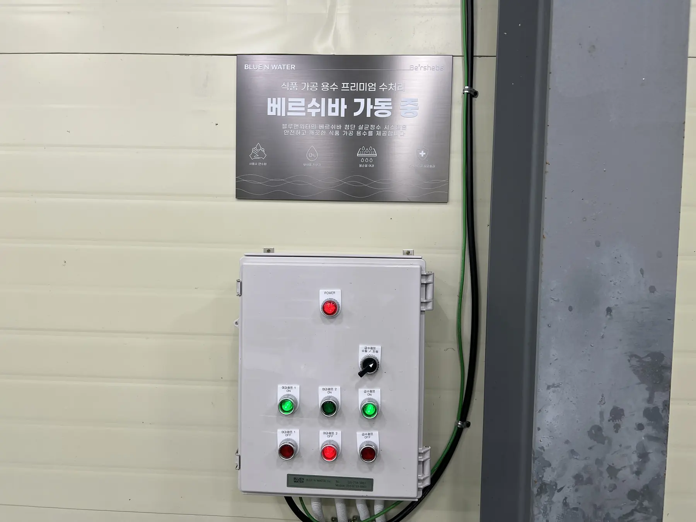
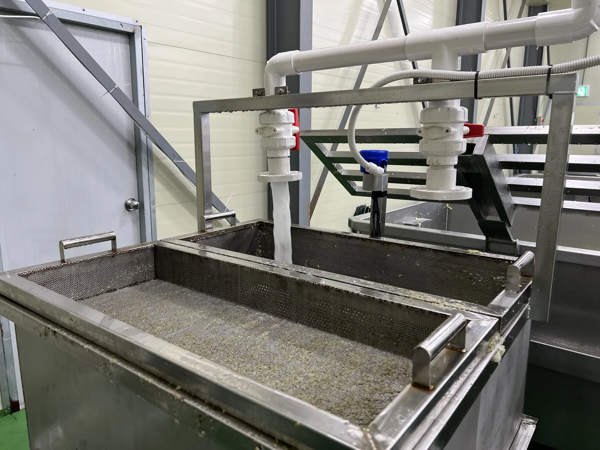
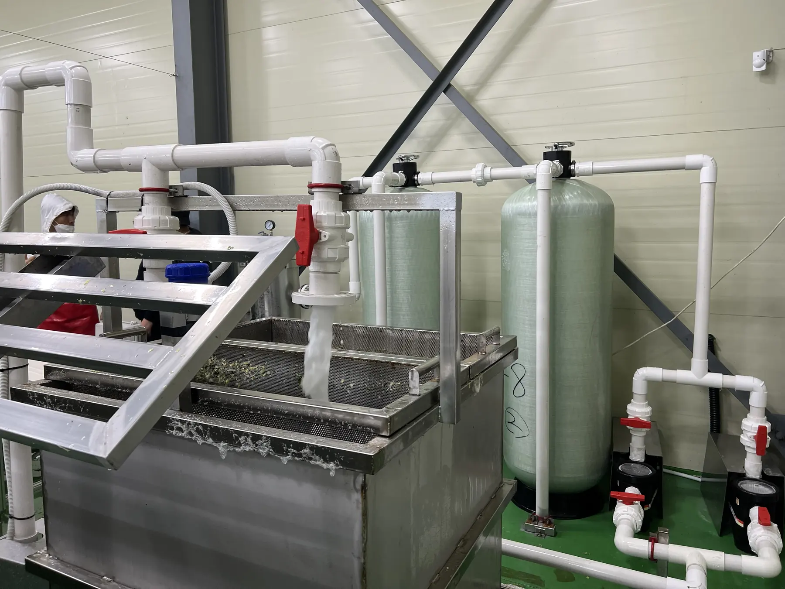
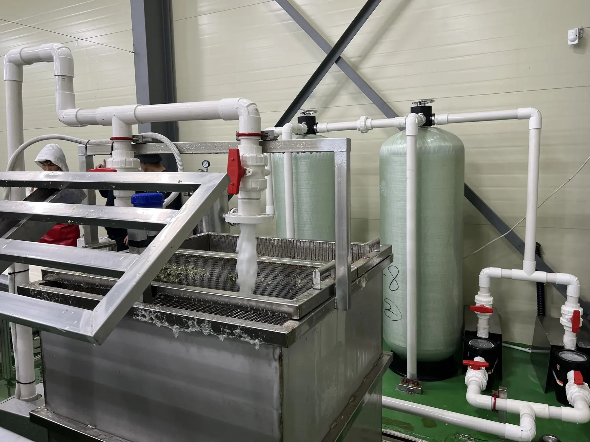

Agri-Food Processing
Muan Cabbage Processing Factory
Agri-food process water reference
A BLUE N WATER field reference page based on project imagery and water treatment application records.

Muan Cabbage Processing FactoryAgri-food process water reference
Project Overview
적용 포인트
- 배추 가공 현장 공정수 처리 검토
- 협소 공간 내 설비 적용 가능성 확인
- 농식품 가공수 처리 레퍼런스 확보
BLUE N WATER
Field reference for usable water infrastructure.
A BLUE N WATER field reference page based on project imagery and water treatment application records.
Field Gallery
Muan Cabbage Processing Factory 현장 이미지
프로젝트 폴더 내 제공 이미지를 웹 최적화하여 가능한 한 모두 반영했습니다.




